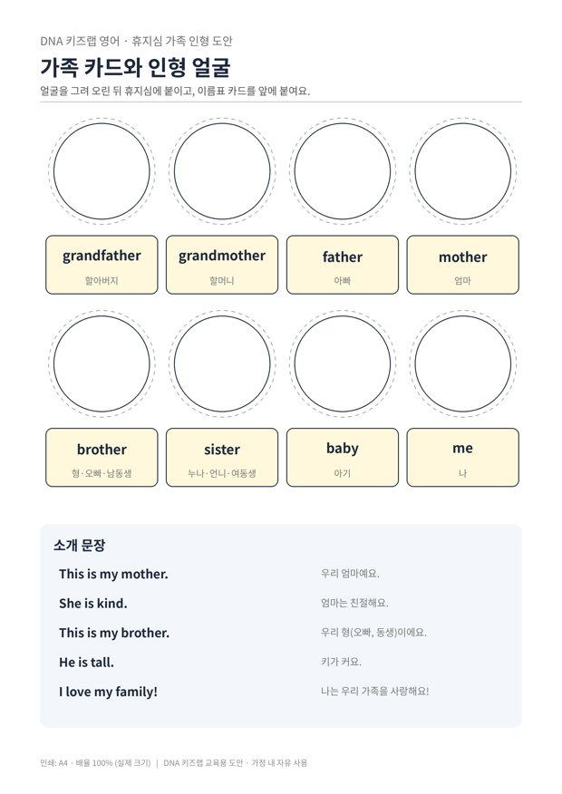

전체 단원 › 실험·활동 › 3학년 2학기 영어
휴지심 가족 인형

휴지심으로 우리 가족 인형을 만들고, 인형극으로 가족을 영어로 소개해요.
40분 · 난이도 ★☆☆ 쉬움
준비물
- 휴지심 (가족 수만큼) — 다 쓴 두루마리 휴지 심
- 가족 인형 도안 — 얼굴 동그라미, 가족 낱말 카드, 소개 문장 (A4 1장)
- 색연필, 털실, 자투리 천 — 머리카락과 옷을 꾸며요
- 풀, 가위 — 얼굴과 이름표를 붙여요
하는 방법
- 얼굴 그리기
도안의 동그라미에 가족 얼굴을 그리고 오려요. 아빠의 안경, 동생의 머리핀처럼 특징을 살려요. - 휴지심에 붙이기
얼굴을 휴지심 위쪽에 붙이고, 휴지심 몸통에 천이나 색종이로 옷을 입혀요. - 이름표 달기
가족 낱말 카드를 오려 인형 앞에 붙여요. father, mother처럼 영어 낱말을 소리 내어 읽으며 붙여요. - 가족 인형극
인형을 하나씩 들어 보이며 "This is my father." 하고 소개해요. 가족이 실제로 앞에 있으면 더 신나요.
사람을 소개하는 표현은 3~4학년 영어의 기본 표현입니다. 인형을 쓰면 아이가 직접 말하는 부담이 줄어들어, 수줍음 많은 아이도 쉽게 따라 해요. 영어에는 형, 오빠, 남동생이 모두 brother 한 낱말이라는 것도 재미있게 알려 주세요.
학교 교육과정 연결
- [4영02-05] 자신, 주변 사람이나 사물의 소개나 묘사를 쉽고 간단한 문장으로 말하거나 보고 쓴다.